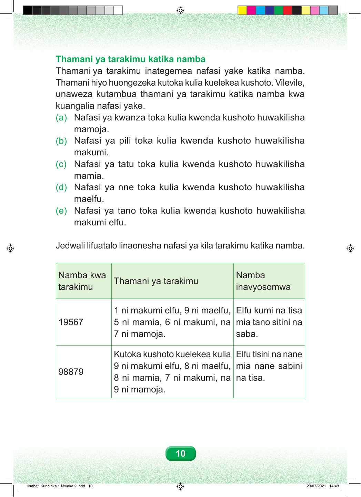

Thamani ya tarakimu katika namba Thamani ya tarakimu inategemea nafasi yake katika namba. Thamani hiyo huongezeka kutoka kulia kuelekea kushoto. Vilevile, unaweza kutambua thamani ya tarakimu katika namba kwa kuangalia nafasi yake. (a) Nafasi ya kwanza toka kulia kwenda kushoto huwakilisha mamoja. (b) Nafasi ya pili toka kulia kwenda kushoto huwakilisha makumi. (c) Nafasi ya tatu toka kulia kwenda kushoto huwakilisha mamia. (d) Nafasi ya nne toka kulia kwenda kushoto huwakilisha maelfu. (e) Nafasi ya tano toka kulia kwenda kushoto huwakilisha makumi elfu. Jedwali lifuatalo linaonesha nafasi ya kila tarakimu katika namba. Namba kwa Namba Thamani ya tarakimu tarakimu inavyosomwa 1 ni makumi elfu, 9 ni maelfu, Elfu kumi na tisa 19567 5 ni mamia, 6 ni makumi, na mia tano sitini na 7 ni mamoja. saba. Kutoka kushoto kuelekea kulia Elfu tisini na nane 9 ni makumi elfu, 8 ni maelfu, mia nane sabini 98879 8 ni mamia, 7 ni makumi, na na tisa. 9 ni mamoja. 10 Hisabati Kundirika 1 Mwaka 2.indd 10 23/07/2021 14:43